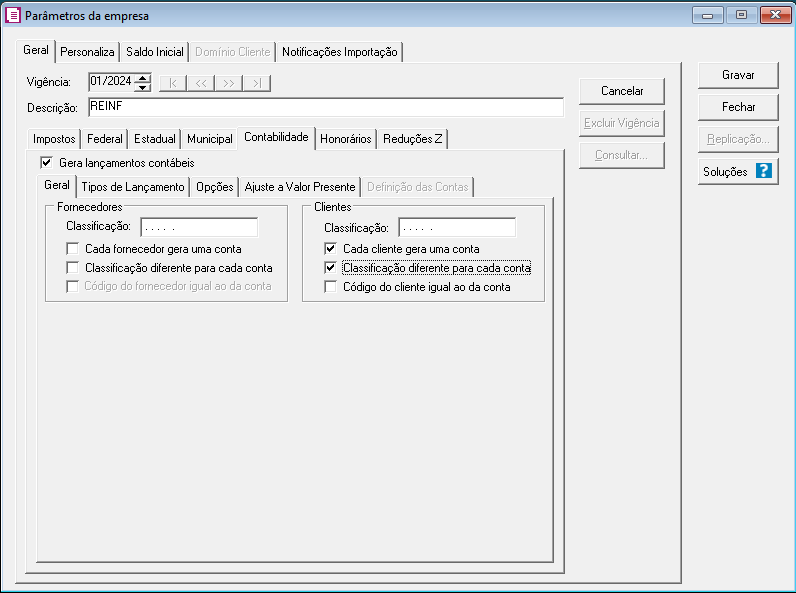

Para determinados clientes, essa configuração é estratégica no controle do contas a receber, pois permite a elaboração de um balanço mais robusto e detalhado, especialmente no que se refere à composição do grupo de clientes a receber no ativo.
Porque fazer a segreção dos clientes?
1 - Parâmetros
Antes de iniciarmos as configurações, vamos selecionar previamente as seguintes opções nos parâmetros do sistema.
Parâmetros → Contabilidade

Obs: A opção criar uma nova conta pode ser desmarcada posteriormente para evitar duplicidade nas nas contas